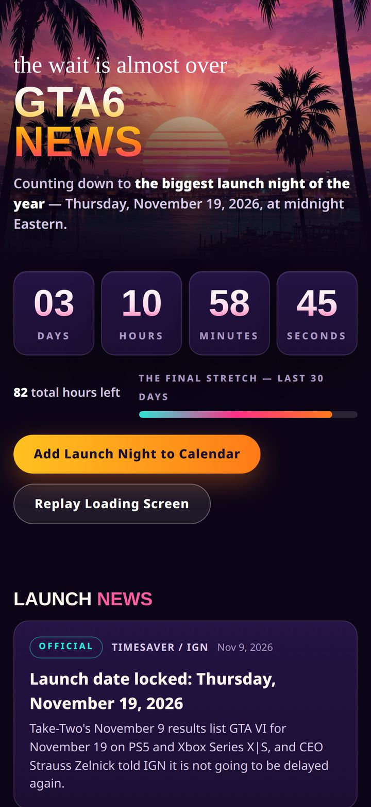
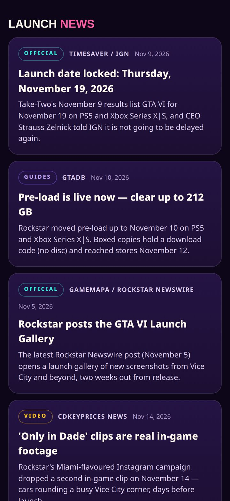
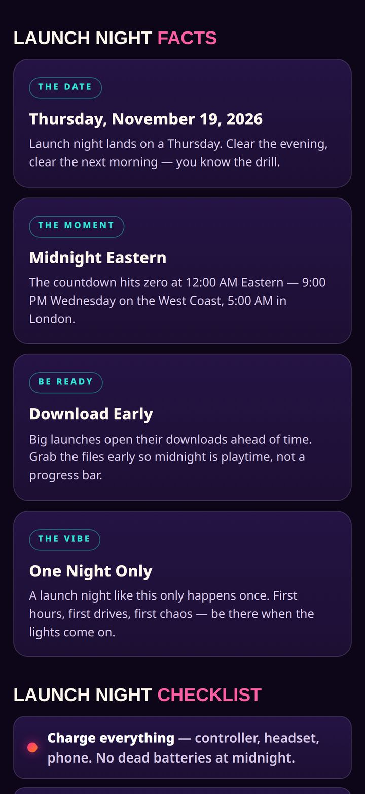

About GTA6 News
- Live countdown to Thursday, November 19, 2026 at midnight Eastern — days, hours, minutes, seconds and total hours left, with a “final stretch” meter.
- Launch news feed: the latest official posts, headlines and videos in one place — tap any card to read the original story.
- After launch, it counts UP: see exactly how long the game has been out, with Day 1, Week 1 and Month 1 milestones.
- One-tap “Add Launch Night to Calendar” so you never miss the moment, plus launch-night facts and a get-ready checklist.
- Original neon sunset artwork throughout — no screenshots, no clips. The countdown works fully offline.
Unofficial fan app
GTA6 News is an unofficial, fan-made app. It is not affiliated with, endorsed by, or connected to Rockstar Games or Take-Two Interactive.



More apps by Michael Aras
- S.W.I.S.H – Crossword Battle — Multiplayer crossword battle — 5 tiles, 60 seconds a turn.
- SWISH CITY — Endless runner through a golden city, starring Swisher the blue mascot.
- S.W.I.S.H - Crossword ARCADE — The crossword battle in arcade style — cartoon graphics, Rush races and daily challenges.
- Santa Countdown Timer — Sleeps until Christmas, an Advent calendar, a snow globe and Santa status updates.